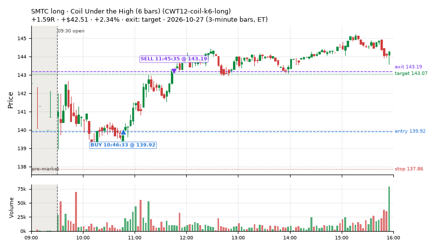
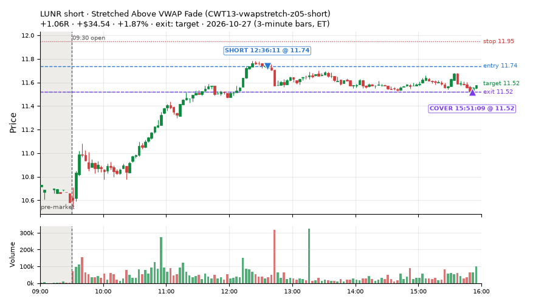
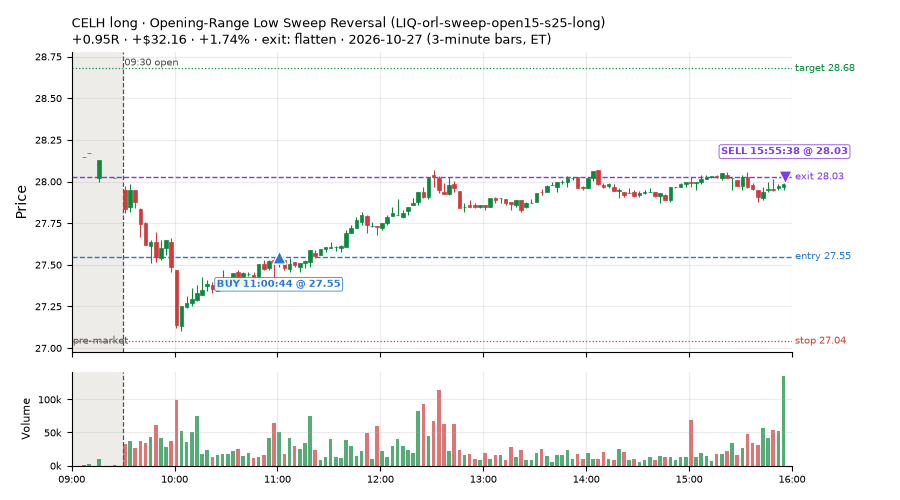
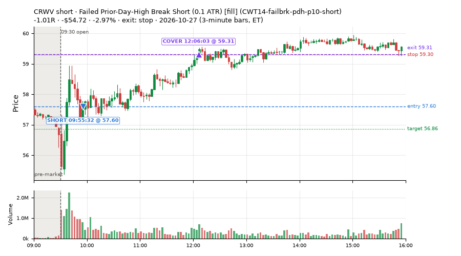
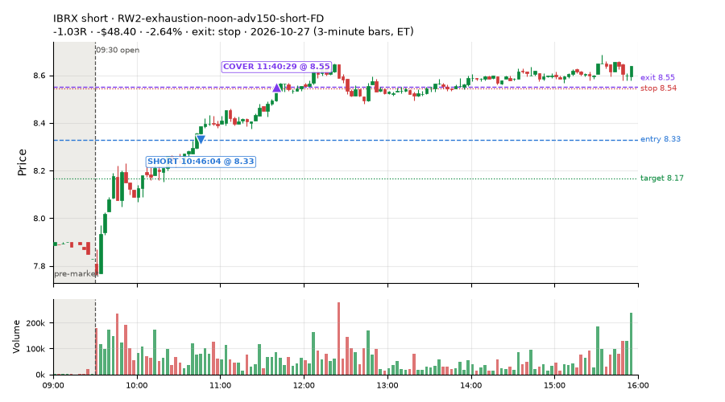
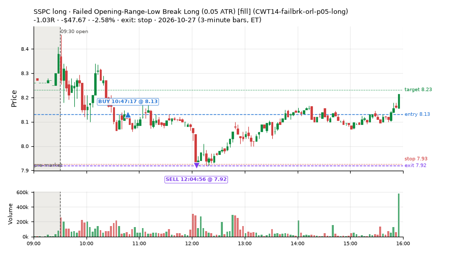
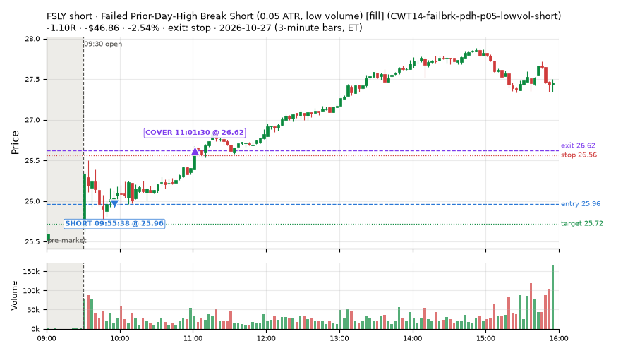
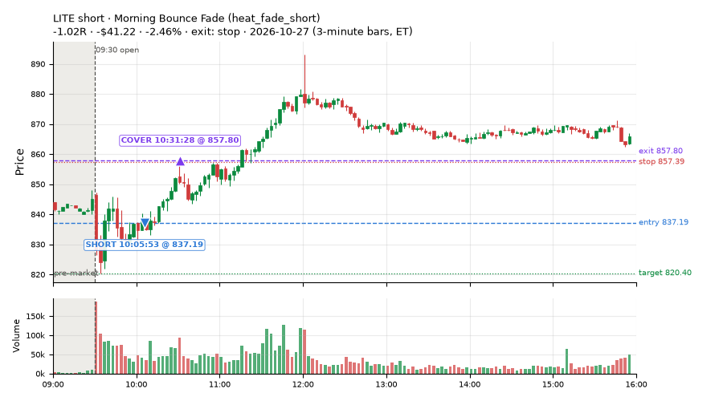

392 trades · win rate 58% · P/L $-826.58
PROBATION: no live setup has passed both locked test periods. 10 owner-directed setups added 2026-10-08 (MarcoFlow top 5 + 5 new), untested live. RW6G1 (RW6 + VWAP band guard) added 2026-10-09, probation.

| Symbol | Setup | Side | In | Out | Entry | Exit | Exit reason | % gained | P/L |
|---|---|---|---|---|---|---|---|---|---|
| SMTC | Coil Under the High (6 bars) (CWT12-coil-k6-long) | long | 10:46 | 11:45 | 139.92 | 143.19 | target | +2.34% | $42.51 |
| LUNR | Stretched Above VWAP Fade (CWT13-vwapstretch-z05-short) | short | 12:36 | 15:51 | 11.74 | 11.52 | target | +1.87% | $34.54 |
| CELH | Opening-Range Low Sweep Reversal (LIQ-orl-sweep-open15-s25-long) | long | 11:00 | 15:55 | 27.55 | 28.03 | flatten | +1.74% | $32.16 |
| Symbol | Setup | Side | In | Out | Entry | Exit | Exit reason | % lost | P/L |
|---|---|---|---|---|---|---|---|---|---|
| CRWV | CWT14-failbrk-pdh-p10-short | short | 09:55 | 12:06 | 57.60 | 59.31 | stop | -2.97% | $-54.72 |
| IBRX | RW2-exhaustion-noon-adv150-short-FD | short | 10:46 | 11:40 | 8.33 | 8.55 | stop | -2.64% | $-48.40 |
| SSPC | CWT14-failbrk-orl-p05-long | long | 10:47 | 12:04 | 8.13 | 7.92 | stop | -2.58% | $-47.67 |
| FSLY | CWT14-failbrk-pdh-p05-lowvol-short | short | 09:55 | 11:01 | 25.96 | 26.62 | stop | -2.54% | $-46.86 |
| LITE | heat_fade_short | short | 10:05 | 10:31 | 837.19 | 857.80 | stop | -2.46% | $-41.22 |








Signal to fill: median 1s, 90th percentile 3s (392 trades). Bars close each minute; the order follows the bar close.
Best excursion (MFE): median 0.38R; worst (MAE) median 0.49R. 30% of trades never got +0.25R in our favour; 2 reached +1R and still closed at or below 0.
| Symbol | Setup | Best R | Worst R | Closed R |
|---|---|---|---|---|
| MELI | heat_fade_short | +1.28 | -1.33 | -1.43 |
| FERG | heat_fade_short-FD | +0.79 | -1.08 | -1.15 |
| VEEV | CWT14-failbrk-orl-p05-long | +0.90 | -1.03 | -1.03 |
| DKNG | ST2-slope20up-long-am-t05s1-FD | +2.42 | -0.10 | +0.61 |
| GE | RW2-exhaustion-noon-adv150-short-FD | +0.79 | -1.01 | -1.01 |
| Entry time | Trades | Win | Avg R | P/L |
|---|---|---|---|---|
| 09:50-10:30 | 194 | 58% | -0.18 | $-569.42 |
| 10:30-11:30 | 145 | 61% | +0.01 | $-158.47 |
| 11:30-13:00 | 32 | 47% | -0.15 | $-30.06 |
| 13:00-14:00 | 12 | 75% | +0.18 | $32.37 |
| 14:00-16:00 | 9 | 22% | -0.36 | $-101.00 |
| Setup | Trades | Win | Avg R | Adj R (net of SPY) | P/L |
|---|---|---|---|---|---|
| Gap-Down Bounce Rejection Short (5% gap) (CWT09-gapdn-bounce-g5-lowerhalf-short) | 1.0 | 0% | -1.22 | -0.96 | $-17.60 |
| Coil Under the High (6 bars) (CWT12-coil-k6-long) | 11.0 | 55% | +0.36 | +0.02 | $80.55 |
| Stretched Above VWAP Fade (CWT13-vwapstretch-z05-short) | 13.0 | 54% | +0.02 | +0.06 | $27.88 |
| Failed Opening-Range-Low Break Long (0.05 ATR) [fill] (CWT14-failbrk-orl-p05-long) | 77.0 | 78% | +0.14 | -0.17 | $110.80 |
| Failed Opening-Range-Low Break Long (0.05 ATR, low volume) [fill] (CWT14-failbrk-orl-p05-lowvol-long) | 67.0 | 81% | +0.09 | -0.22 | $39.91 |
| Failed Opening-Range-Low Break Long (0.1 ATR) [fill] (CWT14-failbrk-orl-p10-long) | 41.0 | 71% | +0.10 | -0.28 | $48.63 |
| Failed Opening-Range-Low Break Long (low volume) (CWT14-failbrk-orl-p10-lowvol-long) | 42.0 | 74% | +0.10 | -0.26 | $60.27 |
| Failed Prior-Day-High Break Short (0.05 ATR, low volume) [fill] (CWT14-failbrk-pdh-p05-lowvol-short) | 23.0 | 22% | -0.60 | -0.28 | $-249.54 |
| Failed Prior-Day-High Break Short (low volume) (CWT14-failbrk-pdh-p10-lowvol-short) | 10.0 | 40% | -0.29 | -0.07 | $-41.70 |
| Failed Prior-Day-High Break Short (0.1 ATR) [fill] (CWT14-failbrk-pdh-p10-short) | 34.0 | 32% | -0.54 | -0.34 | $-254.70 |
| Opening-Range Low Sweep Reversal (LIQ-orl-sweep-open15-s25-long) | 10.0 | 60% | +0.11 | -0.06 | $61.15 |
| MF1-945-flowsell-vwapup-FD | 3.0 | 0% | -1.07 | -0.84 | $-8.41 |
| RW2-exhaustion-noon-adv150-short-FD | 18.0 | 17% | -0.74 | -0.56 | $-354.76 |
| ST1-ordn-long-pm-t05s1-FD | 1.0 | 100% | +0.34 | +0.19 | $18.24 |
| ST2-slope20up-long-am-t05s1-FD | 7.0 | 29% | -0.28 | -0.33 | $-68.37 |
| Midday Gap-Up Dip Buy (heat_fade_long) failed Apr-Jun holdout: -0.138R/trade over 1043 trades | 2.0 | 50% | -0.20 | -0.26 | $-5.24 |
| heat_fade_long-FD | 2.0 | 50% | -0.17 | -0.21 | $-7.19 |
| Morning Bounce Fade (heat_fade_short) failed Apr-Jun holdout: -0.015R/trade over 1420 trades | 9.0 | 0% | -1.07 | -0.72 | $-222.11 |
| heat_fade_short-FD | 21.0 | 33% | -0.19 | -0.14 | $-44.39 |
Market direction (SPY, beta 1) accounted for $366.63 of today's $-826.58; the rest ($-1,193.21) came from the setups themselves. Avg R net of SPY: -0.24 (incl. a hedge leg's cost; report only).
23 setups live today. Today: 831 signals, 392 taken, 43 lost because another setup held the symbol (5%). Since 2026-10-21 (5 sessions): 3152 signals, 1487 taken, 177 lost to other setups (6%). Peak open positions today 155 of 200 slots. Earnings blackout removed 1099 symbols before scanning.
Simulated playing time (not live): 1658 what-if trades of signals not taken, avg -0.04R, 59% winners; of them 177 lost to another setup (avg -0.18R).
Crowded out: NS2-sma50break-overbought-short, heat_fade_long-FD · Starved: ST1-ordn-long-pm-t05s1-FD, MF1-945-flowsell-vwapup-FD, heat_fade_long, heat_fade_short-FD
| Prio | Setup | Today sig / taken | Sessions | Signals / taken / trades | Taken/day | Expected/day | Lost to other setups | Lost to (setup n) | Top skip reasons | SIMULATED: not-taken n / avg R / win | Verdict |
|---|---|---|---|---|---|---|---|---|---|---|---|
| 1 | ST1-ordn-long-pm-t05s1-FD ST1-ordn-long-pm-t05s1-FD | 1 / 1 | 5 | 6 / 4 / 4 | 0.80 | 3.49 | 0 | – | spread / quote / size 1, broker rejected 1 | 2 / -0.20R / 50% | starved 0.80 entries/day vs ~3.49 expected |
| 2 | RW6-ns2-up3-short-FD RW6-ns2-up3-short-FD | 0 / 0 | 5 | 29 / 13 / 13 | 2.60 | 7.12 | 0 | – | daily loss cap 9, not shortable / shorts off 5, spread / quote / size 2 | 16 / +0.43R / 81% | slow 13.0 entries/week; ~5 weeks to 60 trades |
| 3 | NS2-sma50break-overbought-short-FD NS2-sma50break-overbought-short-FD | 1 / 0 | 5 | 53 / 23 / 23 | 4.60 | 17.08 | 0 | – | daily loss cap 19, not shortable / shorts off 7, spread / quote / size 4 | 30 / +0.41R / 73% | ok 23.0 entries/week |
| 4 | Big Gainer Average Reclaim Fade NS2-sma50break-overbought-short | 0 / 0 | 5 | 29 / 6 / 6 | 1.20 | 5.74 | 17 | NS2-sma50break-overbought-short-FD 17, RW6-ns2-up3-short-FD 6 | symbol held by another setup 17, not shortable / shorts off 3, spread / quote / size 3 | 23 / -0.03R / 52% | crowded-out 17 of 29 signals (59%) lost to setups already holding the symbol |
| 5 | MF1-945-flowsell-vwapup-FD MF1-945-flowsell-vwapup-FD | 18 / 3 | 5 | 52 / 22 / 22 | 4.40 | 23.94 | 0 | – | daily loss cap 13, spread / quote / size 13, not shortable / shorts off 4 | 30 / -0.49R / 27% | starved 4.40 entries/day vs ~23.94 expected |
| 6 | ST2-slope20up-long-am-t05s1-FD ST2-slope20up-long-am-t05s1-FD | 8 / 7 | 5 | 60 / 45 / 45 | 9.00 | 24.03 | 8 | heat_fade_short-FD 7, heat_fade_short 1 | symbol held by another setup 8, spread / quote / size 7 | 15 / -0.21R / 47% | ok 45.0 entries/week |
| 7 | Midday Gap-Up Dip Buy heat_fade_long | 2 / 2 | 5 | 19 / 13 / 13 | 2.60 | 30.36 | 3 | heat_fade_long-FD 3 | symbol held by another setup 3, spread / quote / size 3 | 6 / +0.20R / 67% | starved 2.60 entries/day vs ~30.36 expected |
| 8 | Opening-Range Low Sweep Reversal LIQ-orl-sweep-open15-s25-long | 16 / 10 | 5 | 99 / 73 / 73 | 14.60 | – | 6 | CWT14-failbrk-orl-p10-long 6, CWT14-failbrk-orl-p05-lowvol-long 6, CWT14-failbrk-orl-p10-lowvol-long 4 | spread / quote / size 9, symbol held by another setup 6, per-setup cap 6 | 26 / +0.03R / 58% | ok 73.0 entries/week |
| 9 | RW2-exhaustion-noon-adv150-short-FD RW2-exhaustion-noon-adv150-short-FD | 51 / 18 | 5 | 219 / 92 / 92 | 18.40 | 50.34 | 2 | CWT14-failbrk-orl-p10-lowvol-long 1, CWT14-failbrk-orl-p10-long 1, CWT12-coil-k6-long 1 | daily loss cap 75, not shortable / shorts off 35, spread / quote / size 13 | 127 / -0.20R / 43% | ok 92.0 entries/week |
| 10 | heat_fade_long-FD heat_fade_long-FD | 5 / 2 | 5 | 40 / 15 / 15 | 3.00 | 51.74 | 10 | heat_fade_long 10, ST1-ordn-long-pm-t05s1-FD 1 | symbol held by another setup 10, spread / quote / size 9, daily loss cap 6 | 25 / +0.21R / 64% | crowded-out 10 of 40 signals (25%) lost to setups already holding the symbol |
| 11 | Failed Opening-Range-Low Break Long (low volume) CWT14-failbrk-orl-p10-lowvol-long | 57 / 42 | 5 | 222 / 138 / 138 | 27.60 | – | 3 | CWT14-failbrk-pdh-p05-lowvol-short 2, CWT14-failbrk-orl-p10-long 1, CWT14-failbrk-orl-p05-long 1 | daily loss cap 35, spread / quote / size 28, per-setup cap 17 | 82 / -0.00R / 67% | ok 138.0 entries/week |
| 12 | Failed Opening-Range-Low Break Long (0.1 ATR) [fill] CWT14-failbrk-orl-p10-long | 64 / 41 | 5 | 272 / 153 / 153 | 30.60 | – | 6 | CWT14-failbrk-orl-p05-lowvol-long 4, CWT14-failbrk-orl-p05-long 4, CWT14-failbrk-orl-p10-lowvol-long 4 | daily loss cap 46, spread / quote / size 33, per-setup cap 32 | 117 / -0.07R / 64% | ok 153.0 entries/week |
| 13 | Morning Bounce Fade heat_fade_short | 13 / 9 | 5 | 68 / 40 / 40 | 8.00 | 31.76 | 0 | – | spread / quote / size 26, not shortable / shorts off 2 | 28 / -0.19R / 36% | ok 40.0 entries/week |
| 14 | Failed Opening-Range-Low Break Long (0.05 ATR, low volume) [fill] CWT14-failbrk-orl-p05-lowvol-long | 150 / 67 | 5 | 506 / 218 / 218 | 43.60 | – | 3 | CWT14-failbrk-orl-p10-lowvol-long 2, CWT14-failbrk-orl-p10-long 2, CWT14-failbrk-orl-p05-long 2 | daily loss cap 134, per-setup cap 108, spread / quote / size 43 | 286 / -0.04R / 68% | ok 218.0 entries/week |
| 15 | heat_fade_short-FD heat_fade_short-FD | 48 / 21 | 5 | 320 / 129 / 129 | 25.80 | 173.78 | 58 | heat_fade_short 40, LIQ-orl-sweep-open15-s25-long 9, CWT14-failbrk-orl-p05-long 5 | symbol held by another setup 58, daily loss cap 56, spread / quote / size 46 | 191 / -0.00R / 47% | starved 25.80 entries/day vs ~173.78 expected |
| 16 | Failed Opening-Range-Low Break Long (0.05 ATR) [fill] CWT14-failbrk-orl-p05-long | 190 / 77 | 5 | 661 / 277 / 277 | 55.40 | – | 55 | CWT14-failbrk-orl-p10-lowvol-long 42, CWT14-failbrk-orl-p10-long 42, CWT14-failbrk-orl-p05-lowvol-long 42 | per-setup cap 149, daily loss cap 108, spread / quote / size 72 | 383 / -0.03R / 67% | ok 277.0 entries/week |
| 17 | Gap-Down Bounce Rejection Short (5% gap) CWT09-gapdn-bounce-g5-lowerhalf-short | 9 / 1 | 5 | 84 / 21 / 21 | 4.20 | – | 0 | – | not shortable / shorts off 47, daily loss cap 12, spread / quote / size 3 | 63 / +0.29R / 65% | ok 21.0 entries/week |
| 18 | Failed Prior-Day-High Break Short (0.05 ATR, low volume) [fill] CWT14-failbrk-pdh-p05-lowvol-short | 60 / 23 | 4 | 163 / 61 / 61 | 15.25 | – | 1 | CWT14-failbrk-orl-p10-lowvol-long 1, CWT14-failbrk-orl-p10-long 1 | daily loss cap 68, spread / quote / size 24, not shortable / shorts off 8 | 102 / -0.25R / 50% | ok 76.2 entries/week |
| 19 | Failed Prior-Day-High Break Short (low volume) CWT14-failbrk-pdh-p10-lowvol-short | 17 / 10 | 4 | 63 / 41 / 41 | 10.25 | – | 0 | – | spread / quote / size 18, daily loss cap 3, not shortable / shorts off 1 | 22 / -0.22R / 50% | ok 51.2 entries/week |
| 20 | Failed Prior-Day-High Break Short (0.1 ATR) [fill] CWT14-failbrk-pdh-p10-short | 66 / 34 | 3 | 96 / 54 / 54 | 18.00 | – | 1 | CWT13-vwapstretch-z05-short 1, CWT14-failbrk-pdh-p05-lowvol-short 1, CWT14-failbrk-pdh-p10-lowvol-short 1 | spread / quote / size 15, per-setup cap 11, daily loss cap 9 | 42 / -0.25R / 48% | ok 90.0 entries/week |
| 21 | Stretched Above VWAP Fade CWT13-vwapstretch-z05-short | 17 / 13 | 3 | 47 / 37 / 37 | 12.33 | – | 1 | LIQ-orl-sweep-open15-s25-long 1 | spread / quote / size 5, not shortable / shorts off 4, symbol held by another setup 1 | 10 / +0.01R / 50% | ok 61.7 entries/week |
| 22 | Gap-Down VWAP Loss Short (5% gap) CWT09-gapdn-vwaploss-g5-short | 10 / 0 | 2 | 16 / 1 / 1 | 0.50 | – | 0 | – | not shortable / shorts off 11, spread / quote / size 3, price through stop/target 1 | 15 / -0.12R / 40% | slow 2.5 entries/week; ~24 weeks to 60 trades |
| 23 | Coil Under the High (6 bars) CWT12-coil-k6-long | 28 / 11 | 1 | 28 / 11 / 11 | 11.00 | – | 3 | CWT14-failbrk-pdh-p10-short 2, heat_fade_short 1 | daily loss cap 8, spread / quote / size 6, symbol held by another setup 3 | 17 / +0.46R / 59% | ok 55.0 entries/week |
Every trade is attached as a CSV you can open and edit in Excel or Google Sheets. Live page: https://misiti15.github.io/MCF/live/